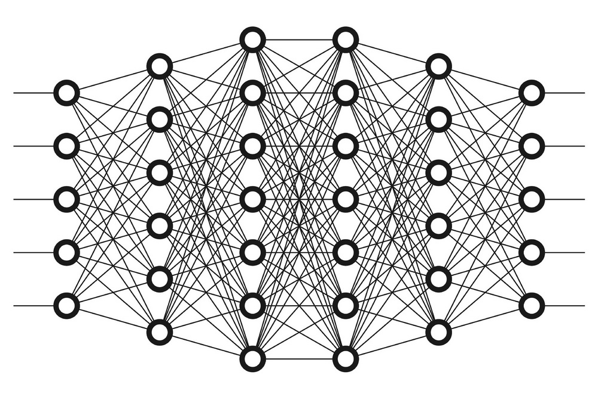

Нейросеть или ИИ
Нейронная сеть (нейросеть) или же ИИ (Искуственный Интелект):
Это компьютерная модель, которая имитирует работу человеческого мозга. Она состоит из множества связанных между собой
элементов, называемх нейронами, которые могут обробатывать информацию и принимать решения. На основе данных, подоваемых
на вход сети, нейроесть способна обучаться и настраивать свои внутренние параметры для достежения лучшей точности на
прогнозируемых задачах.

Например:
Нейросеть может быть обучена по фоторафиям, чтобы распозновать объекты на них, или по данным о покупках, чтобы
прогнозировать поведение клиентов в будущем.
Кто такие Нейроны?
Нейроны:
Это особый тип клеток, которые находятся в мозге и спинном мозге животных и людей. Нейроны обычно состоят из тела клетки,
дендритов (множества коротких ветвей) и аксона (длинного отростка). Нейроны используются для передачи информации в нервной
системе, обработки информации и контроля за многими важными функциями организма, таким как чивствительность, движение,
память и эмоции.
Кто создатель?
Создаетль нейросети:
Нейронные сети были разработаны исследователями в области искусственного интеллекта и нейробиологии. Одним из ранних
известных пионеров в области нейронных сетец был Уоррен Маккалок, американский ученый, который в 1949 году создал модель
искуственног нейрона, вдохновившую многих другий ученых. Однако, впервые нейросеть как таковая была предложена американским
исследователем Фрэнком Розенблаттом в 1958 году. Розенблатт создал нейронную сеть, которая была названа "перцептроном", и
использовал её для классификации изображений.
С тех пор нейронные сети развивались и применялись в различных облостях, и на сегодняшний день являются одной из самых
популярных технологий в области машинного обучения и искуственного интеллекта.